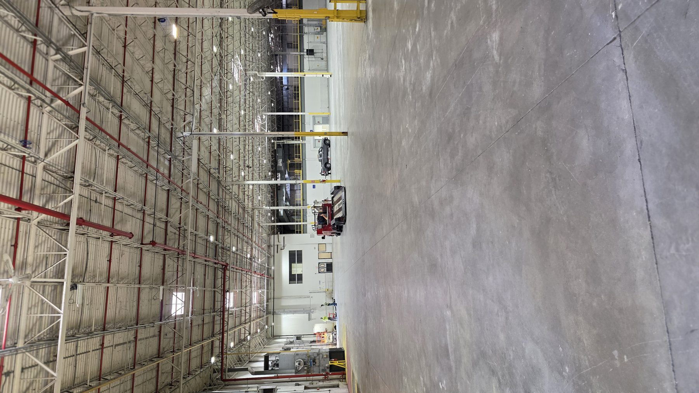
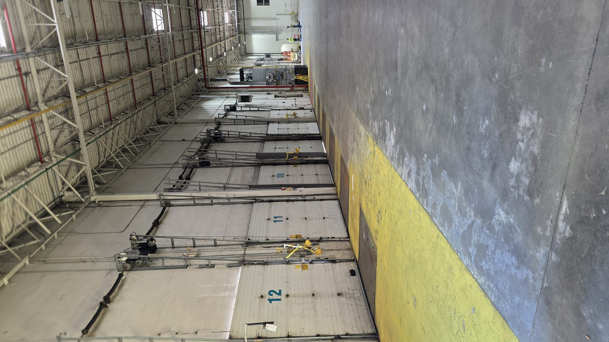

← ALL PROJECTSIndustrial Interior Renovation / Demolition
2303 Center Square Road
Industrial interior renovation and selective demolition at 2303 Center Square Road in Swedesboro, New Jersey.
THE WORK
Specific scope. Clear execution.
GMT coordinates existing conditions, demolition, door and opening review, scope changes, and subsequent interior work.
Project Scope
- Selective demolition
- Existing-condition documentation
- Change-order coordination
- Door and opening review
- Follow-on interior scopes
- Field-response coordination
EXECUTION PRIORITIES
Project TypeCommercial interior renovation
Risk FocusExisting conditions and scope evolution
GMT ApproachDocument, price, coordinate, execute
PROJECT GALLERY
2303 Center Square Road — field progress.
Demolition and interior renovation progress.

